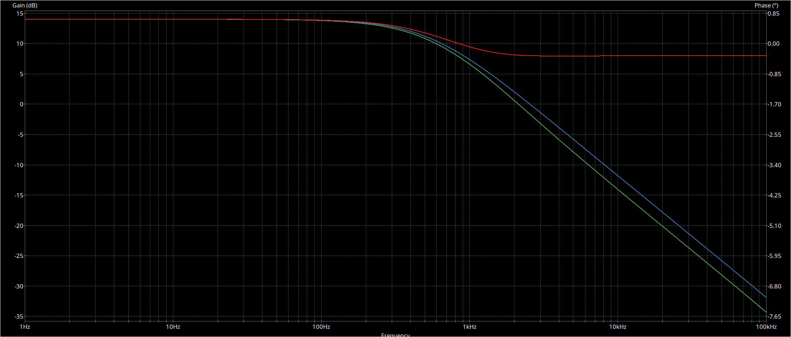

RC active lowpass filter
Description
The goal is to implement, analyze and do practical measurements on an active lowpass filter (butterworth).
Goals
- [x] Document schematic in Kicad
- [x] Do a theoretical analyis
- [x] Calculate 2nd,3rd and 5th order
- [ ] Implement schematic on breadboard
- [ ] Test circuit and do measurements
Equipment used
| Equipment | Description |
|---|---|
| Peaktech 6075 | DC power supply |
| Peaktech 4055 | AC power supply |
| RS Pro RSDS 1204X-E | Oscilloscope |
Components
| Reference | Value | Remarks |
|---|---|---|
| 1x capacitor | 3.2n | |
| 1x capacitor | 4.9n | |
| 1x capacitor | 6.7n | |
| 1x capacitor | 11.3n | |
| 1x capacitor | 21.5n | |
| 1x capacitor | 22.1n | |
| 1x capacitor | 22.5n | |
| 1x capacitor | 28n | |
| 1x capacitor | 52n | |
| 1x capacitor | 56.5n | |
| 5x resistor | 10k | |
| 2x LM741 | Operational amplifier |
Butterworth filter values
| Order | Sections | C1 | C2 | C3 | C4 | C5 |
|---|---|---|---|---|---|---|
| 2 | 2-pole | 1.414 | 0.7071 | |||
| 3 | 3-pole | 3.546 | 1.392 | 0.2024 | ||
| 4 | 2-pole 2-pole |
1.082 2.613 |
0.9241 0.3825 |
|||
| 5 | 3-pole 2-pole |
3.235 |
0.3090 |
1.753 |
1.354 |
0.4214 |
| 6 | 2-pole 2-pole 2-pole |
1.035 1.414 3.863 |
0.966 0.7071 0.2588 |
|||
| 7 | 3-pole 2-pole 2-pole |
1.604 4.493 |
0.6235 0.2225 |
1.531 |
1.336 |
0.4885 |
| 8 | 2-pole 2-pole 2-pole 2-pole |
1.020 1.202 2.000 5.758 |
0.9809 0.8313 0.5557 0.1950 |
Formulas
Calculates minimum 60db attenuation at frequency Fs. The attenuation result is the total order number of the circuit.
To calculate the resistor values in the circuit. Rxn is the normalized normalized value = 1.
To calculate the capacitor values use the value for the capacitor and calculate the capacitance the capacitors is to use in the circuit.
Circuits
Circuits for 2nd and 3rd order butterworth filter.

Schematics generated from KIcad. The schematics can be downloaded from the repository.
Simulations
Ran simulation AC circuit analysis from 1Hz to 100kHz. 
Calculations
Example 1
With a 2-pole circuit with with attenuation of 3db at 1000Hz and an impedance of 10k gives the following values.
| Component | Value |
|---|---|
| C1 | 22.5n |
| C2 | 11.3n |
| R1 | 10k |
| R2 | 10k |
Example 2
With a 3-pole circuit with with attenuation of 3db at 1000Hz and an impedance of 10k gives the following values.
| Component | Value |
|---|---|
| C3 | 56.5n |
| C4 | 22.1n |
| C5 | 3.2n |
| R3 | 10k |
| R4 | 10k |
| R5 | 10k |
Example 3
With a 5th order 3-pole circuit + 2-pole with with attenuation of 3db at 1000Hz and an impedance of 10k gives the following values.
| Component | Value |
|---|---|
| C6 | 28n |
| C7 | 21.5n |
| C8 | 6.7n |
| C9 | 52n |
| C10 | 4.9n |
| R6 | 10k |
| R7 | 10k |
| R8 | 10k |
| R9 | 10k |
| R10 | 10k |
Practical measurements
[!NOTE]
Waiting for components